Before1440 px · full page

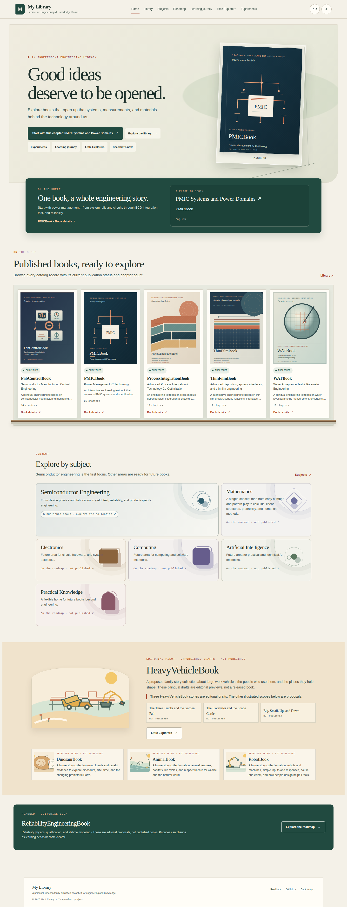
Visual change record · My Library
Before and after views of the Home and Library shelves at desktop and mobile widths. The updated shelf gives each cover a visible support plane and a defined front lip; mobile keeps the shelf horizontally browsable.
Featured shelf and published books shelf

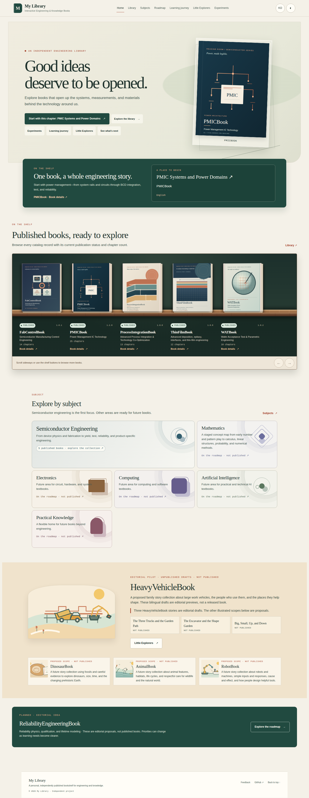
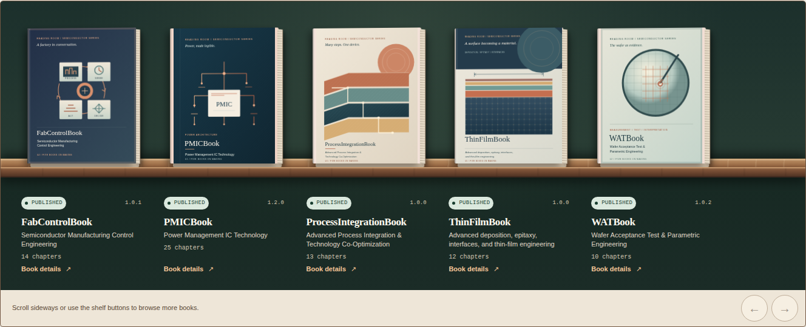
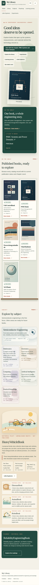
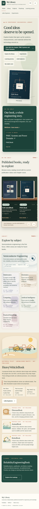
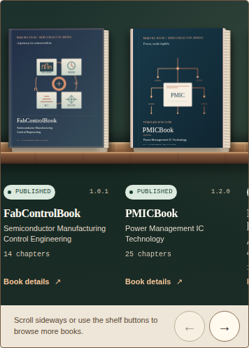
Complete catalog, including status
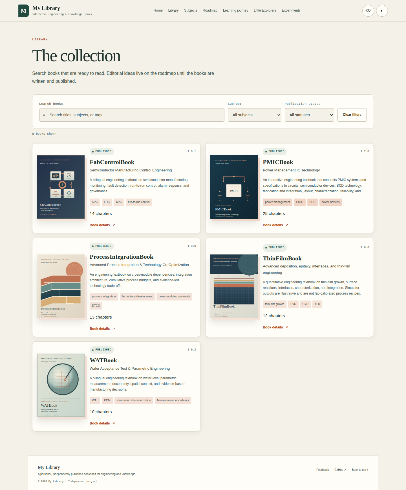
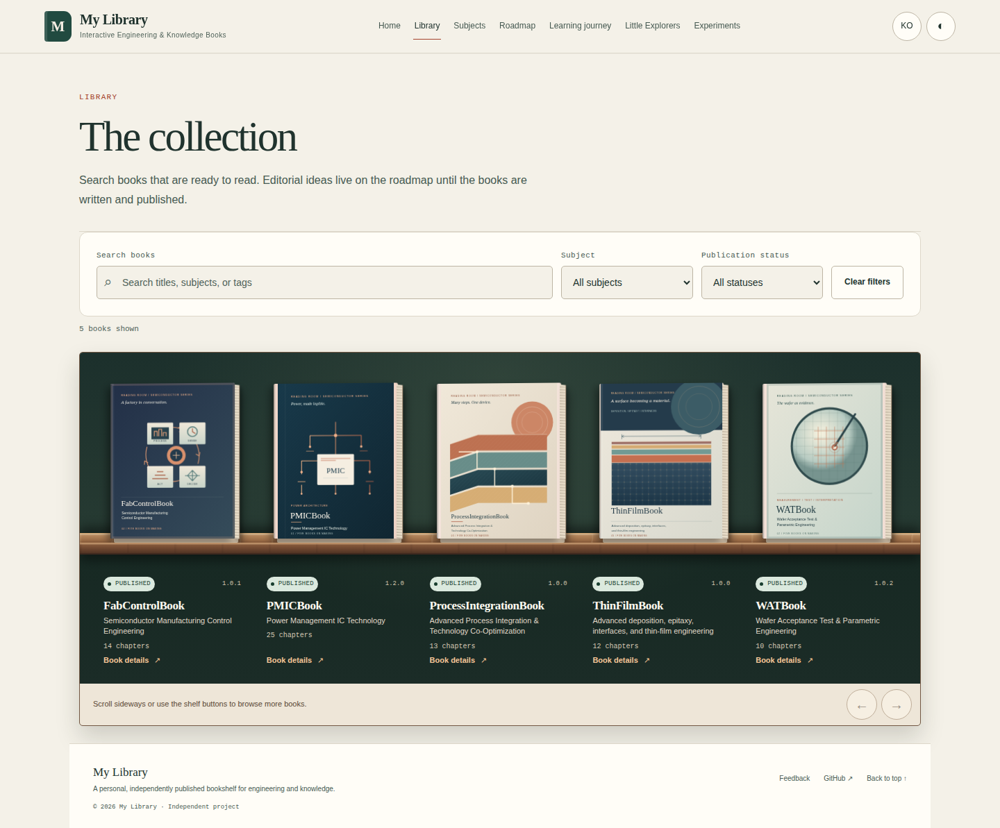
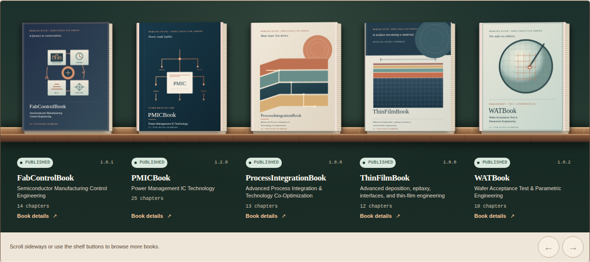
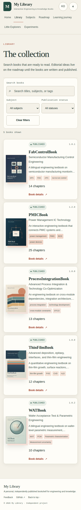
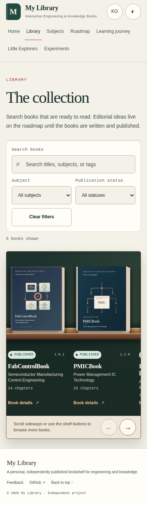
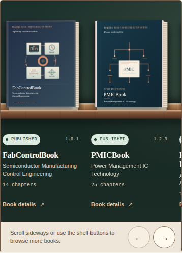
Content integrity check
SHA-256 values for the five cover SVGs at baseline commit 69991eb match the current working files. The catalog JSON hash also matches, so the comparison does not include a cover-art or book-data change.
| File at baseline | SHA-256 | Current match |
|---|---|---|
site/assets/covers/fabcontrolbook.svg | 7a9754d6abd56c1fb89b2da5d0c60c36ba517159242ab9e0f05371f6f65d2e5a | Yes |
site/assets/covers/pmicbook.svg | 412ba32280a876eef63ee893b75436fbda4886c2404f3e610d512228c7230709 | Yes |
site/assets/covers/processintegrationbook.svg | 3572532a24502529bbcb3eddfcf8560667bdeb54d9992a7e386c8b9f1e0c4a79 | Yes |
site/assets/covers/thinfilmbook.svg | 9d4e434324514ada88ee122422d6f03935699be56354628ea222b2b48327dcda | Yes |
site/assets/covers/watbook.svg | fd32abc501c68b986a8a4c126448a76fbc22eae2ffa5f9af65d6aa3f61dece3d | Yes |
site/data/books.json | 7ea4be81c5d8ef93ea5b0c734089acc7c062880f2615817b2e80ecbcff759598 | Yes |
Reference reviewed from the supplied capture bundle on 2026-10-22: books.euiyun.com, used for high-level visual direction. No third-party reference screenshots or artwork are embedded or shipped in this artifact; all displayed screenshots are local captures of this project.
Reproduction and verification
The comparison above shows the baseline and candidate at 390 px and 1440 px in English light mode. To reproduce the after views, use the exact candidate commit in a clean checkout with dependencies and the cached Playwright Chromium installed. In the first terminal, start the repository's local Pages server:
python3 tests/serve.pyIn a second terminal at the repository root, run:
node design/capture-physical-shelf.cjsThe helper verifies that served JavaScript, CSS, and catalog bytes match the checkout, then records a manifest and 52 PNGs under /tmp/books-renaissance-shelf-final/<commit-sha>/. It captures Home and Library at 390 px and 1440 px for English/Korean and light/dark (16 states), plus both routes at 320, 360, 768, 1024, and 1920 px in English light mode (10 responsive states). Each state checks the five rendered books, loaded images, page errors, HTTP/request failures, language/theme, and horizontal overflow; any mismatch makes the command exit nonzero. The HTML comparison itself and its bundled images can be opened offline.